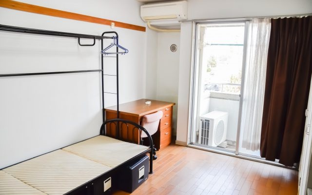
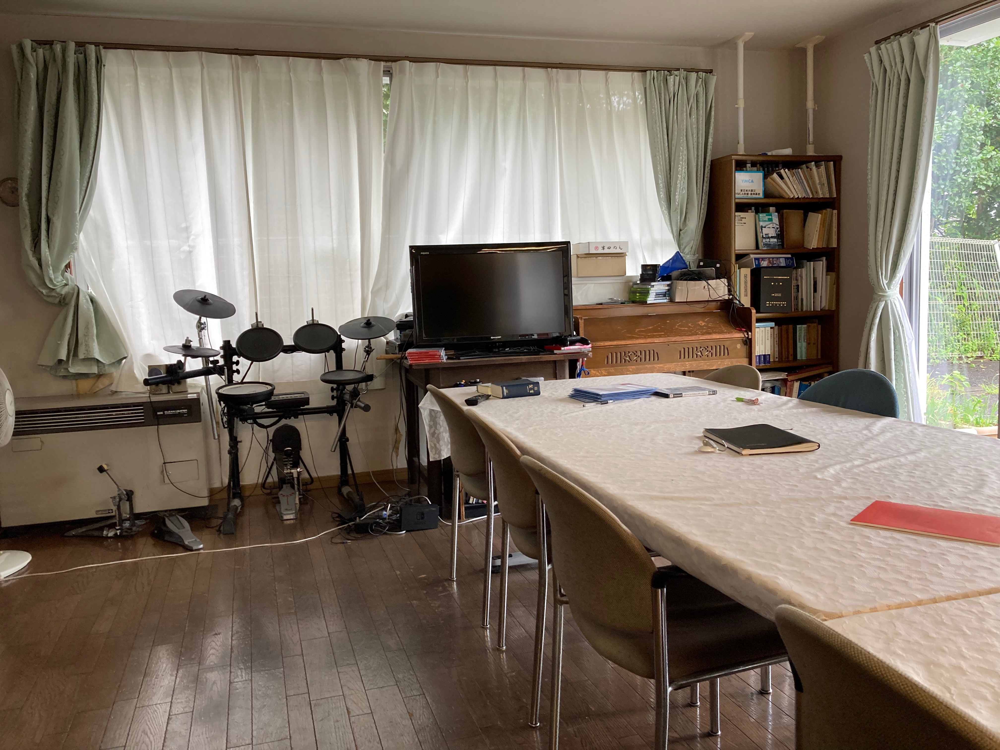
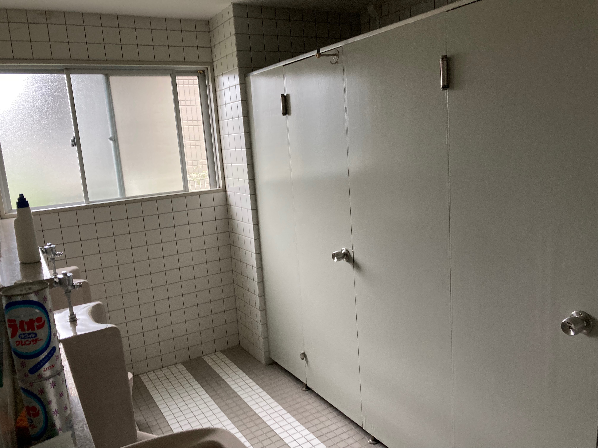
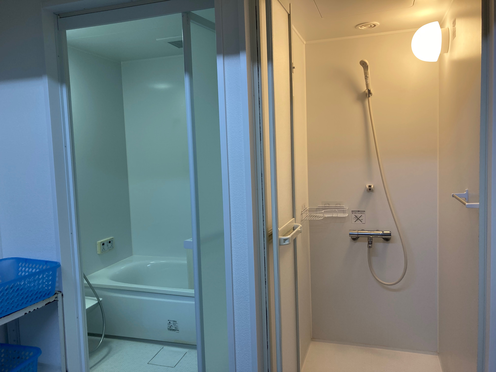
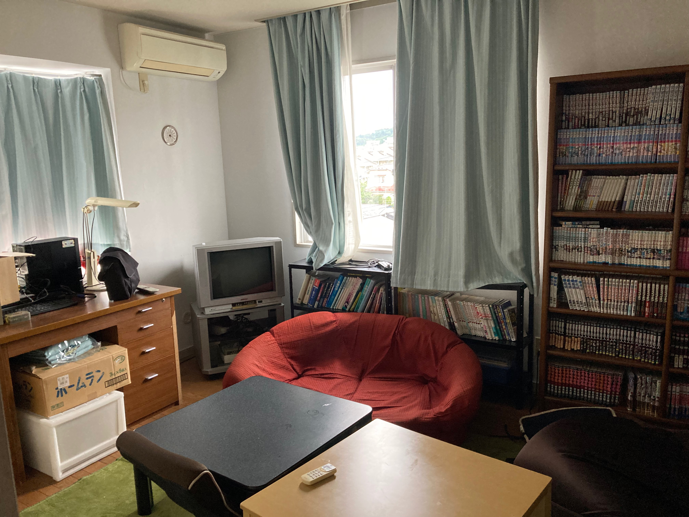

個室
6畳のフローリングです。エアコンとベッド・机・椅子が設置してあり、Wifiと光有線LANに繋げます。
物干し竿と大容量の収納もあります。ある程度の防音性能と鍵がついています。倉本（1年）

ホール
食事をしたり、テレビを見たり勉強をしたりなど好きなように利用できます。
SwitchからNintendo64までたくさんのゲームがあり、遊んでいる寮生もいます。
他にも電子ピアノやドラム、たくさんの歴史ある本やプリンターなどがあり、Wifiも繋がっています。

台所
寮母さんが食事を作るときや寮生が自炊するときに使います。共用の冷蔵庫や多数の食器があり、調理器具も豊富で自由に使うことができます。
オーブンや電子レンジ・炊飯器もあります。

トイレ
2013年に新しくなった洋式のトイレです。
１階が男性、２階が女性用にとそれぞれ分かれています。

風呂
お風呂は男女共用です。浴槽付きの浴室とシャワー室があります。浴槽はちょうど一人が入れるほどの大きさがあります。
また、自由に使える洗濯機が二台と体重計があります。

客間
一泊500円で、入試や見学の際に宿泊できます！
寮生の知人や家族ならどなたでも泊まっていただくことができます。簡易ベッドや、テレビ、こたつ、パソコン、過去の寮生が残していった漫画本などがあります。
他には寮生の飲み会をここで行うこともあります。窓の外には仙台市南部の景色が広がり、空気が澄んでいるとき遠く蔵王の山並みを眺めることができます。